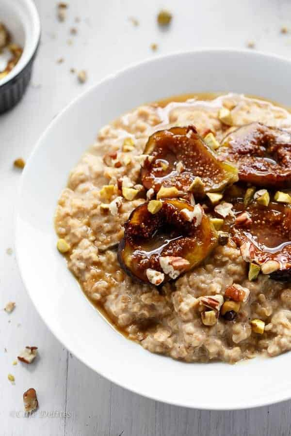

Oatmeal is an incredible thing, when it's made right. Many find the texture to be offputting, but that's because there was no love involved in the process. Most just chulk it into the Microwave and walk away, hoping for the best. But that's not love. Real oatmeal needs to be nurtured and cared for. And that's why it should cooked over the burner, like it was meant to be. This allows oatmeal's true, golden colors to shine, bringing out it's nutty flavor and giving it a crisp texture (far from mush).
Note : Substitute as you see fit, experiment, have fun with it.